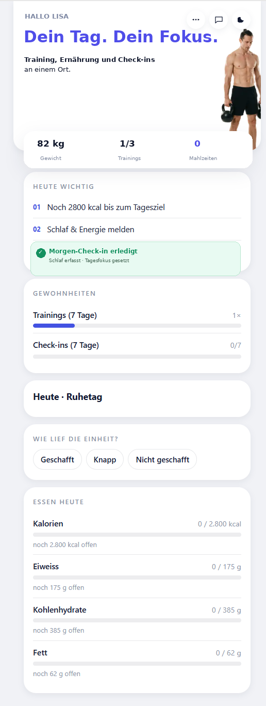

Dein persönlicher
Fitness-Coach.
Immer bei dir.
PULSE ist dein persönlicher Fitness-Assistent: Er begleitet dich proaktiv über WhatsApp oder Telegram, kennt deine Ziele und deinen Plan und hilft dir, Training und Ernährung im Alltag umzusetzen. In deiner PULSE-App laufen Coaching, Tracking und Fortschritt zusammen.
Dein Ziel. Dein persönlicher Plan. Tägliche Begleitung, die von selbst kommt.
Dein Personal Assistant.
Nur für dein Ziel.
Du hast deine Fitnessziele. PULSE hat den Plan, die Erinnerungen und die Ausdauer, jeden Tag an deiner Seite zu bleiben. Dein Personal Assistant meldet sich selbst – und deine App hat alles im Blick.
PULSE im Originalvideo. Mit Ton abspielen.
Ein Tag mit PULSE.
Sechs Momente. Ein Assistant, der mitdenkt.
Sieh zu, wie PULSE deinen Tag begleitet: Es erinnert dich an deinen Plan, versteht Fotos und Sprachnachrichten, hilft bei spontanen Entscheidungen und macht Fortschritt in deiner App sichtbar.
Aus deinem Plan wird echte Begleitung – proaktiv, persönlich und unkompliziert.

Interaktive Simulation mit Beispieldaten. Keine Live-Verarbeitung.

Mehr Überblick.
Weniger Routine.
Der Morgen-Check-in ist erfasst. Der Trainingsplan bleibt sichtbar.
Bei relevanten Fragen oder nötigen Freigaben kann der Coach übernehmen.
PULSE-ERFOLGE
Menschen. Alltag.
Unterschiedliche Ziele.
Persönliche Ziele. Sichtbare Veränderungen.
Dein ganzes Coaching.
In deiner Tasche.
Trainingspläne, Übungen mit Videos, Ernährung und deine Fortschritte. Alles an einem Ort – und intelligent mit deinem persönlichen PULSE-Coach verbunden.

Echte PULSE-App-Oberflächen mit anonymisierten bzw. illustrativen Beispieldaten. Tippe auf eine Funktion, um die Ansicht zu wechseln.
Dein Plan. Dein Fortschritt. Immer griffbereit.
Entdecke die App-Ansichten direkt in dieser Vorschau. Wechsle zwischen Training, Ernährung und Fortschritt.
Ein öffentlicher App-Download ist noch nicht verfügbar. Informationen zum Zugang erhältst du bei der persönlichen Einrichtung.
Deine Gespräche. Deine Daten.
Deine Privatsphäre.
Die Datenbank für das Onboarding hat ihren Standort in Zürich. Welche Dienste bei der Nutzung von PULSE beteiligt sind, erfährst du in der Datenschutzerklärung.
Die Onboarding-Datenbank liegt in Zürich.
Was du mit deinem PULSE Assistant besprichst, behandeln wir vertraulich.
Bei Messenger, Website und Zahlung sind weitere Anbieter beteiligt.

Dein Ziel erreichen
beginnt im Alltag.
PULSE begleitet dich dabei – rund um die Uhr.
PULSE ist dein digitaler Personal Assistant. Keine menschliche Trainerbetreuung rund um die Uhr und keine medizinische Beratung.
PULSE Personal
Deine tägliche Coaching-Begleitung. Für weniger als einen Kaffee am Tag.
- Wissen, welches Training heute zu dir passt
- Beim Essen Entscheidungen treffen, die deinem Ziel dienen
- Bei Zeitmangel, Fragen oder Motivationstiefs weiterkommen
- Mit täglicher Unterstützung konsequenter dranbleiben
Häufige Fragen.
Geplant sind sieben kostenlose Tage ab bereitgestelltem Zugang. Vor Ablauf kannst du kündigen; danach kostet PULSE CHF 98 pro Monat und ist monatlich kündbar. Der kostenlose Test ist in dieser Vorschau noch nicht buchbar.
Die PULSE Personal Mitgliedschaft umfasst den digitalen Assistant über einen unterstützten Messenger sowie die PULSE-App mit Trainings- und Ernährungsfunktionen, Tracking und Fortschrittsübersicht. Der verbindliche Leistungsumfang steht in den Mitgliedschaftsbedingungen.
Nach der Anmeldung richtest du deine Ziele und deinen Coaching-Kontext ein. Anschliessend nutzt du den unterstützten Messenger für die tägliche Begleitung und die PULSE-App für Trainingsplan, Ernährung und Fortschritt. Die konkreten Einrichtungsschritte werden beim Start erklärt.
Eine Fitness-App zeigt dir Pläne und Daten. PULSE ergänzt einen Personal Assistant, der deinen Plan kennt, dich im Alltag erinnert, auf Fragen reagiert und dir hilft, konsequent dranzubleiben. Chat und App gehören zusammen.
Die digitale PULSE-Begleitung ist als 24/7-Unterstützung konzipiert – nicht als persönliche Betreuung durch einen menschlichen Trainer. Verfügbarkeit, unterstützte Kanäle und mögliche Nutzungsgrenzen werden vor dem Kauf verbindlich ausgewiesen.
Ja. Proaktive Check-ins, Erinnerungen und kleine Rückfragen sind der Kern des Coaching-Erlebnisses. Sie orientieren sich an deinen Zielen und deinem Plan.
Das sind zentrale vorgesehene PULSE-Abläufe. Die Demo zeigt, wie erfasste Inhalte analysiert, bestätigt und in die App übernommen werden. Welche Foto- und Sprachfunktionen im jeweiligen Leistungsumfang freigeschaltet sind, wird vor dem Kauf transparent ausgewiesen.
Die Onboarding-Datenbank liegt in Zürich. Je nach Funktion sind weitere Anbieter beteiligt, darunter der gewählte Messenger. Die Details zu den Datenwegen findest du in der Datenschutzerklärung.
Nein. Du kannst PULSE Personal direkt als Privatperson nutzen – unabhängig von einem Fitnessstudio. Falls dein Coach PULSE anbietet, kannst du es auch im Rahmen deiner bestehenden Betreuung erhalten.
PULSE unterstützt dich im Alltag und hilft beim Dranbleiben. Es ersetzt keine medizinische Diagnose oder erforderliche persönliche fachliche Betreuung.
Für das geplante Testangebot gilt: Du kannst vor Ablauf der sieben kostenlosen Tage kündigen. Danach kostet PULSE CHF 98 pro Monat und ist monatlich kündbar. Die Kündigung erfolgt vor der nächsten Abrechnungsperiode per E-Mail oder über das bereitgestellte Abo-Portal. Der Test ist in dieser Vorschau noch nicht buchbar.
Dein Ziel wartet nicht.
Dein Coach auch nicht.
Du weisst jetzt, wie PULSE dich im Alltag begleiten kann. Erlebe die tägliche Begleitung sieben Tage kostenlos.
7 Tage kostenlos testenEin klarer Überblick.Dein Alltag. Dein Ziel. Dein Coach.